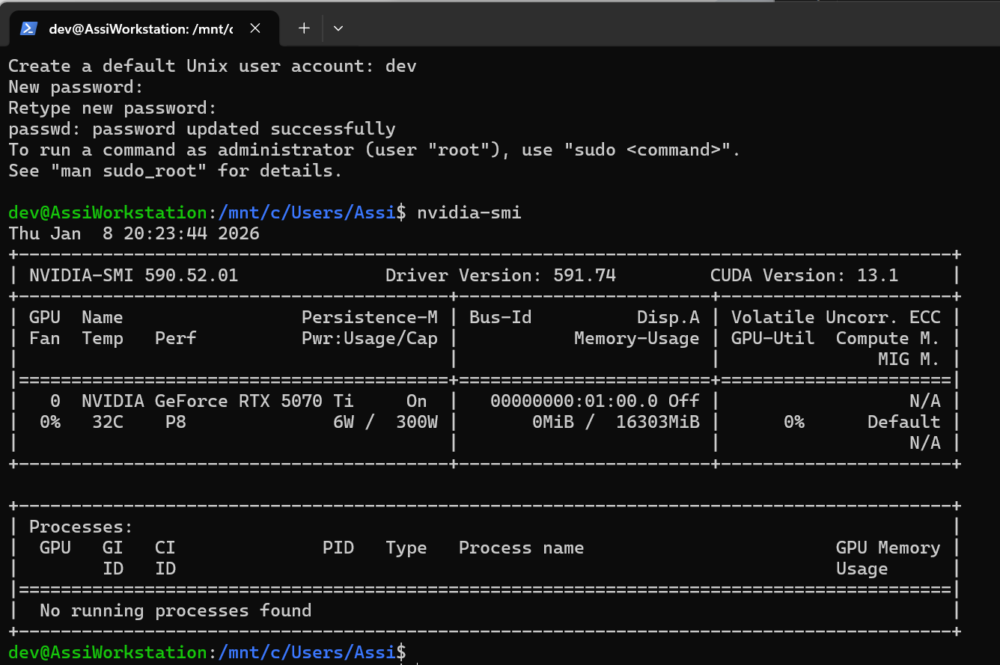
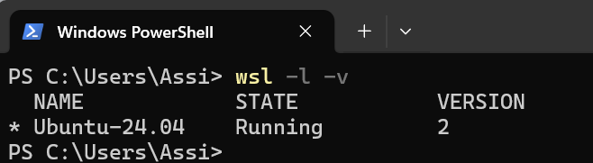
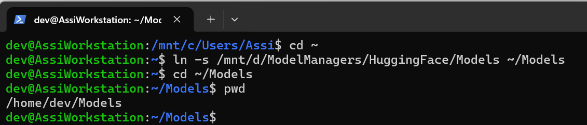
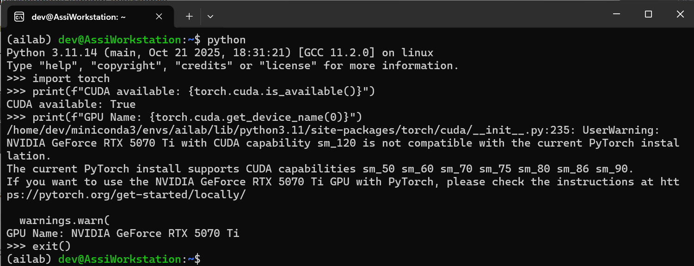
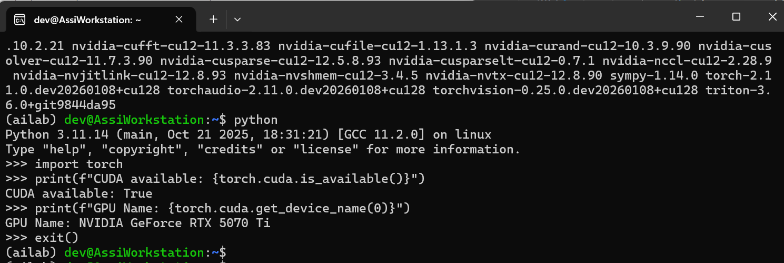
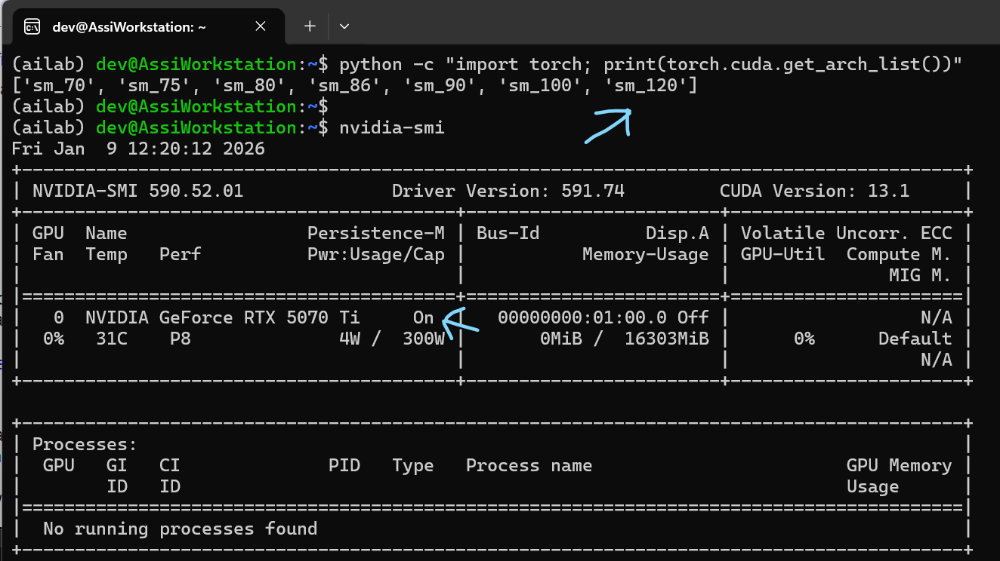

AI Guide - QLoRA
Blueprint
General QLoRA Blueprint
Linux WSL2
Install WSL
Open Terminal as Administrator
type: wsl --install
when it is done restart your computer
After restart, a black window will pop up asking for a Username and Password,
(choose simple ones like: dev, dev).
If no window pops up, open Terminal and type: wsl
if it start installing then good,
if it says "...no installed distributions" then
use 'wsl.exe --list --online' to list available distributions
type: wsl --install -d Ubuntu-24.04
If it looks like it stopped on something like "Create a default Unix user account: ssi"
then actually, it is just a print over print.
Backspace 3 times to remove the "ssi" string
and enter your user name (dev)
and then password.
If you need to uninstall, open Terminal
type: wsl --unregister Ubuntu-24.04
type: wsl --install -d Ubuntu-24.04



Type: sudo apt update && sudo apt upgrade -y
Open Terminal and type: wsl
or, open terminal and click the little dropdown arrow at the top and select Ubuntu 24.04
or, right click the Desktop,
New > Shortcut
location type: wsl.exe ~ -d Ubuntu-24.04
name: "AiLab Workstation"
Miniconda
Install Miniconda
Inside Ubuntu type: wget https://repo.anaconda.com/miniconda/Miniconda3-latest-Linux-x86_64.sh
Type: bash Miniconda3-latest-Linux-x86_64.sh
you get few "Yes" and "Enter"
Type: source ~/.bashrc
and you get "(base)" in the beginning of your prompt
Type: conda create --name ailab python=3.11 -y
it might not run but give you a message that you need to accept terms,
so you need to run the two lines it gives you there.
This command creates a "room", an environment, called ailab
where specific versions of installation (like Python) reside,
note that this is not the latest Python version - but the latest stable one for Llama3.1
Type: conda activate ailab
and you get "(ailab)" in the beginning of your prompt
Type: rm Miniconda3-latest-Linux-x86_64.sh
PyTorch
Install PyTorch
From inside your ailab room "(ailab) dev@AssiWorkstation:~$"
type: pip install torch torchvision torchaudio --index-url https://download.pytorch.org/whl/cu121
you get many downloads and many colors...
type: python
type: import torch
type: print(f"CUDA available: {torch.cuda.is_available()}")
type: print(f"GPU Name: {torch.cuda.get_device_name(0)}")
type: exit()
and actually, it didn't work for me, this version doesn't support sm_120 which is the CUDA architecture of my card:

so I need to install a newer version
from inside ailab room "(ailab) dev@AssiWorkstation:~$"
type: pip uninstall torch torchvision torchaudio -y
type: pip install --pre torch torchvision torchaudio --index-url https://download.pytorch.org/whl/nightly/cu128
now it is better:

Verify that (for my specific card) sm_120 is part of python
verify that Persistence-M is On
